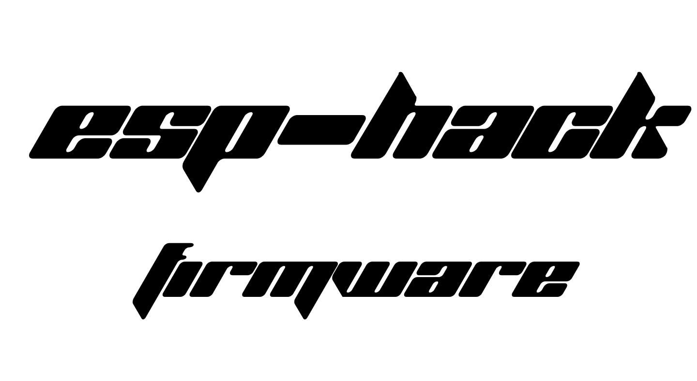

Welcome to the ESP-HACK WIKI!
ESP-HACK is a powerful universal firmware for ESP32, built for research and pentesting of radio frequencies, Bluetooth, infrared signals, and GPIO integrations. The project is aimed at enthusiasts and pentesters who want to explore protocols and devices in sub-GHz ranges and wireless technologies.
This wiki contains instructions for flashing, modules, and hardware connections.
